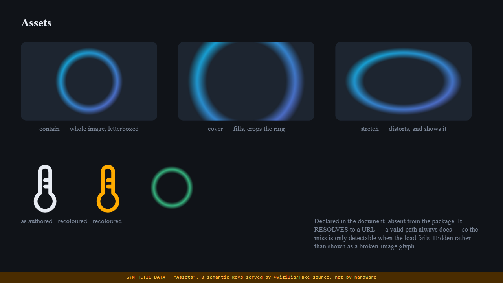
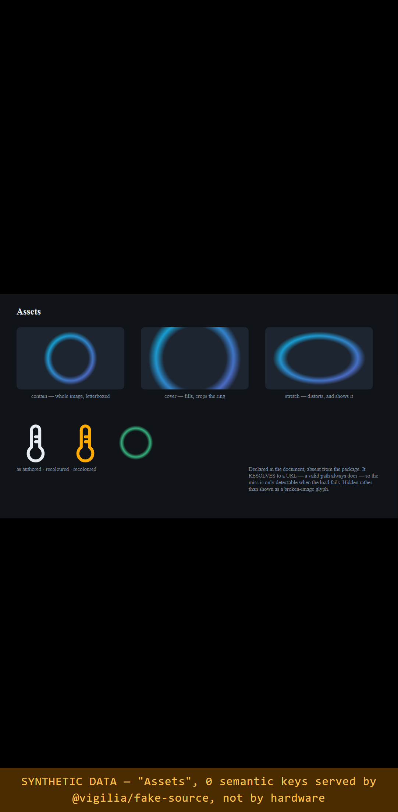
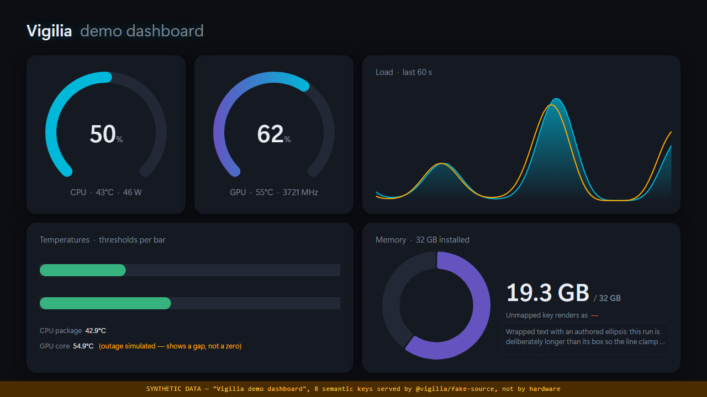
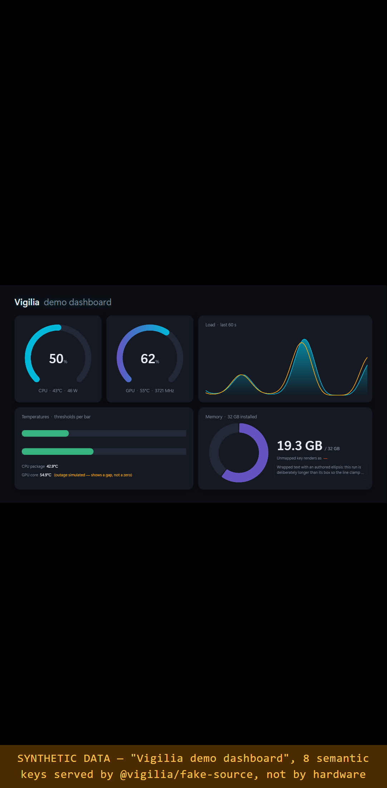
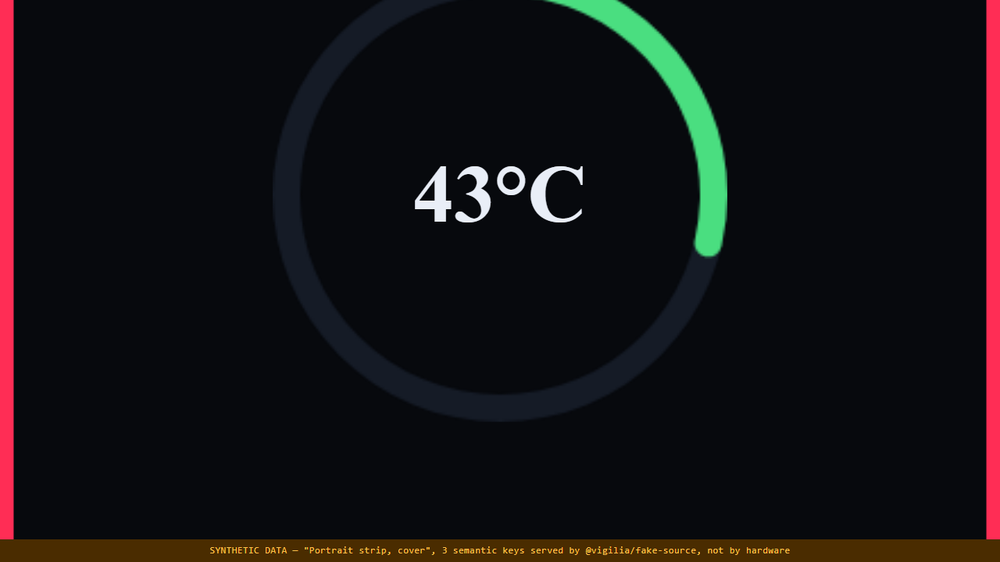
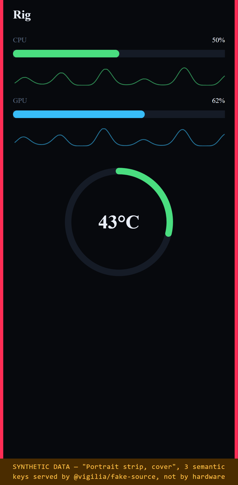
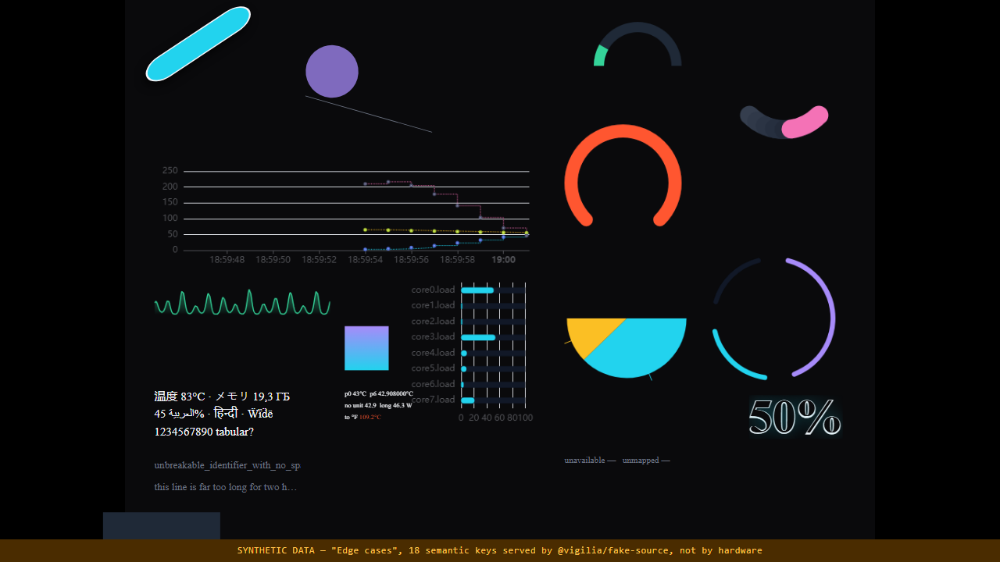
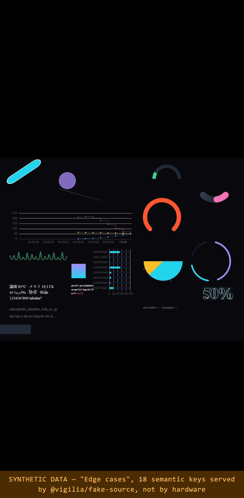

Vigilia — development status
Generated 2026-09-12T09:41:08.277Z ·
branch main ·
commit cff028c · uncommitted changes present
Verified now
Unit tests
Browser tests
Player bundle, gzip
Typechecks
Recently completed
| What | Why it mattered |
|---|---|
| Editor foundation decided (ADR-0005) | Both Fabric candidates rejected: they are canvas editors, and this renderer is DOM plus ECharts. Adopting one meant rendering the scene twice, which §31 forbids and Gate 0 rejects outright. Unblocks Gate 2. |
| Host sequenced after the frontend (ADR-0006) | No .NET code here has ever compiled, so a mid-sequence Gate 3 stalled three milestones that do not depend on it. Gate content is unchanged; only the queue order moved. |
| Determinism boundary measured | Our own rendering is byte-identical at a fixed clock; any frame containing an ECharts chart never is, on either renderer. Settles whether pixel baselines can cover charts — they cannot. |
| Static rendering and reduced motion | The player honours prefers-reduced-motion, and ?static=1 renders without animation. An accessibility requirement first, and what makes a reproducible capture possible second. |
| Assets: resolver, image rendering, monochrome recolouring | The image node type could be authored and validated but never drawn. Also revealed that a declared asset always resolves, so "absent from the package" is only detectable when the load fails. |
| Widget insertion with fresh ids and provenance | Renames node AND binding ids through one map, so a text run cannot end up pointing at a binding that no longer exists. Globals are mapped explicitly, never merged by name (§77). |
| Four theme fixtures, five invalid ones | One showcase theme only proves the renderer works on the layout it was designed against. The stress fixture immediately found a real bug: a node marked invisible rendered anyway. |
| Unknown-field rejection and two drift guards | A typo like "visable": false used to be valid and silently did nothing. Schema↔validator and C#↔TypeScript now both fail a test on drift. |
Next up
In order. Anything marked blocked is waiting on something outside this repository.
| # | What | Why now | State |
|---|---|---|---|
| 1 | Editor: selection, transform handles, undo | The plan/mount split already renders what would be edited, and artboard.ts gives the exact viewport↔document mapping a handle needs. Overlays and a command stack are what is missing. | started |
| 2 | Editor: inspectors and the globals surface | Gate 2 wants global/local override behaviour, rename and delete with reassignment (§75). The document model enforces the rules already; this is the UI over it. | started |
| 3 | Visual style presets | Gate 2 asks for them, and they are data rather than UI — a preset is a named bundle of typed settings, so it can be authored and tested before any inspector exists. | started |
| 4 | Theme packages: ZIP import and export | Gate 4. The security rules are the substance (§141: traversal, decompression bombs, symlinks, executable content), and a hand-written reader can enforce them without a dependency. | started |
| 5 | Font packaging and text metrics | Gate 0 still wants a packaged font demonstrated, and §91 wants multilingual glyphs, digit widths and baselines verified at several artboard scales. Needs the asset pipeline first. | started |
| 6 | SignalR transport and the provider registry | Deferred by ADR-0006. The wire format is the part that should not be invented against a server nobody can run — the C# ↔ TypeScript mirror is already the highest-risk edit here. | blocked |
Milestones
Listed in working order, which ADR-0006 re-sequenced: the gates whose content needs no .NET SDK come first. Gate numbering and every gate's acceptance criteria are unchanged from the design document — only the queue order moved.
| Gate | State | Done | Missing |
|---|---|---|---|
| 0 — Feasibility | blocked | Four chart families, minimal shapes, independent display bundle measured, styling matrix authored, licences inventoried, dependencies pinned. | Human-only: name reference hardware (§126), run the elevation and anti-cheat probes on real hardware, decide the two engine-gap alternatives (§85), approve the editor strategy (ADR-0001). |
| 1 — Document/rendering | nearly done | Schema, typed globals and references, shared renderer, contain/cover, nested transforms, byte-stable JSON round-trip, deterministic screenshot capture. | Screenshots are deterministic per platform but there are no committed pixel baselines — that waits on §126 reference hardware, since CI is Linux and development is Windows. |
| 2 — Authoring | started | Chart and style matrices, typography with styled runs and explicit overflow, widget insertion primitive. Foundation decided: ADR-0005 rejects both Fabric candidates and builds the editor on the shared renderer. | The editor itself: selection, transform handles, gesture undo, inspectors, the globals surface, grouping, snapping, style presets. |
| 4 — Reuse/packages | started | Widget insertion with fresh IDs, provenance and explicit global mapping (§77/§138). | Theme packs: the ZIP container, manifest, import staging, decompression-bomb and traversal limits, SVG importer (host-side), draft recovery. |
| 3 — Live display | deferred | Client-side sample source contract, bounded history with reconnect replacement, deterministic fake source, unmapped-key and status handling end to end. | Everything host-side: provider registry, Windows and API providers, the custom-sensor wizard, pairing, the SignalR transport. Re-sequenced after the frontend by ADR-0006, because no .NET code here has ever been compiled and a mid-sequence Gate 3 stalled three milestones that do not depend on it. |
| 5 — Release | not started | Nothing. | Installer, tray, recovery, permissions review, soak and game benchmarks. |
Rendered evidence
Captured from the built player bundle with a frozen clock and animation disabled, so a frame is a pure function of the clock. These are evidence, not baselines: nothing compares against them, and glyph rasterisation differs between this machine and CI.








Recent commits
cff028cchore(gates): re-capture screenshots in static mode
2026-09-12 16:33:33 +070062c0e41feat(player): static rendering, reduced motion, and the determinism boundary
2026-09-12 16:32:44 +0700011ab34feat(theme): asset resolution, image rendering and monochrome recolouring
2026-09-12 16:16:17 +07007999066feat(theme): widget insertion with fresh ids and provenance (§138)
2026-09-12 16:04:57 +070090fa9aetest(contracts): guard the C# ↔ TypeScript mirror against drift
2026-09-12 16:00:43 +0700facd835docs: record that screenshot capture needs --workers=1
2026-09-12 15:57:59 +0700d0b9a0dtest(themes): add stress and portrait-cover fixtures, and fix what they found
2026-09-12 15:57:22 +0700072cff6feat(theme): canonical serialisation and a byte-stable JSON round-trip
2026-09-12 15:41:18 +0700c6cb293docs: drop the commit count from the handoff
2026-09-12 15:37:03 +0700be3d3e4docs: rewrite the handoff and close out the styling matrix row
2026-09-12 15:36:35 +07007bcdce9feat(renderer): outlines, dashes and shadows — the empty matrix row
2026-09-12 15:34:54 +070040d931afeat(renderer): text layout, overflow and font diagnostics (§89)
2026-09-12 15:25:19 +0700a1c2afedocs: spec the scene renderer, and correct AGENTS.md against what was run
2026-09-12 15:16:43 +0700f47d3b5docs(gates): record what the display path now demonstrates, and the matrix
2026-09-12 15:15:06 +0700767f361fix(renderer): three rendering defects the screenshot found
2026-09-12 15:13:00 +0700ae0ba95feat(player): render the demo theme, and add a browser display harness
2026-09-12 15:08:34 +070043ac4dafeat(renderer): add the scene plan, DOM mount and a deterministic fake source
2026-09-12 14:48:56 +07004beff80feat(theme): add the theme document model and import validation
2026-09-12 14:37:32 +07009afcdf8feat(renderer): add the pie / donut family
2026-09-12 14:27:27 +0700f492c69feat(renderer): add the bar / progress-bar family
2026-09-12 14:25:02 +0700e75576edocs: add a handoff document
2026-09-12 14:10:37 +07005686a9afeat(renderer): add the line / filled-area / sparkline family
2026-09-12 14:09:29 +07005f2b090feat(renderer): add the artboard fit/cover transform
2026-09-12 14:05:52 +0700c9362a2chore: scaffold Vigilia, agent environment and verified dependency research
2026-09-12 14:02:44 +0700